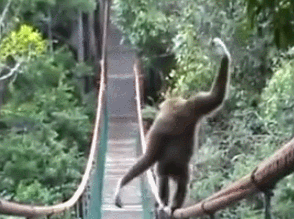

You walk towards the waterfall. But to cross over to the waterfall you have to cross a bridge. The thin, broken bridge definitely does not look promising. But the only other alternative is to take the longer way around. That happens to be a thin rocky path lining the wall of the cave.
